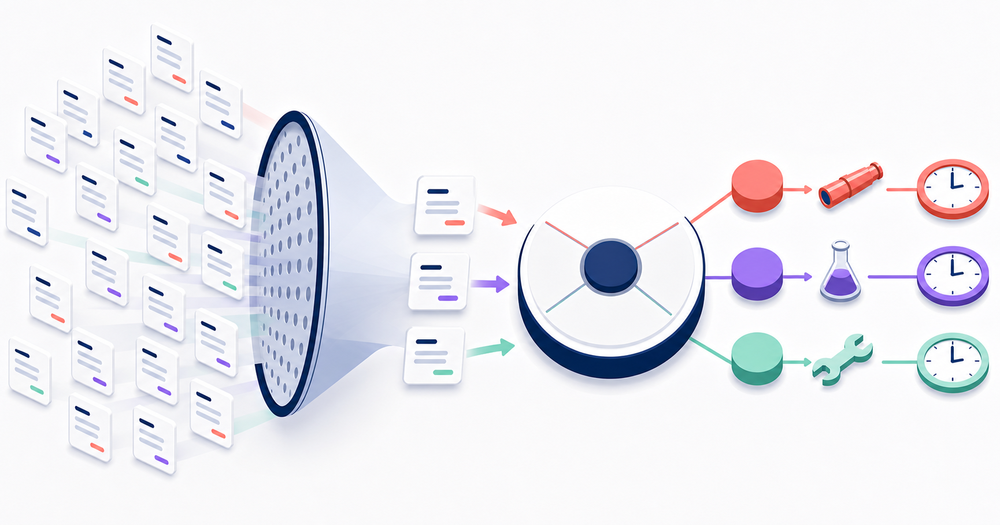
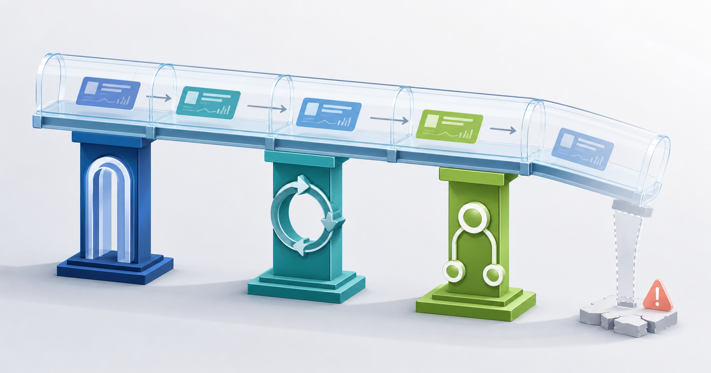

営業管理で見るべきは今月の着地だけではない。数カ月先の売上不足に早く気づくパイプライン管理
みなさんこんにちは、Valorize AI代表の鈴木創也です。
月末が近づくと、営業会議の画面には当期の案件が並びます。営業責任者と担当者は、受注確度、見込み金額、完了予定日を確認し、足りない金額をどの案件で埋めるか話し合います。この確認は必要です。
ただ、受注までに数カ月かかる商材では、未達が見えてから新しい案件を作っても当期には間に合いません。その時点から取れる対応は限られるため、既存案件の前倒し、値引き、担当者への督促に偏りやすくなります。
では、当期の見込みが目標に届いていれば、営業管理は順調なのでしょうか。
一件の大型案件が翌期へずれれば、残りの案件だけでは差額を補えない可能性があります。初期フェーズの案件が減ったままなら、次の四半期の受注候補も不足する可能性があります。当期の着地だけを示す画面からは、こうした変化を判断できません。
営業管理で必要なのは、結果が確定してから理由を説明することではありません。案件の創出方法や支援の仕方を変えられる時点で、数カ月先の不足につながる兆候を捉えることです。そのためには、パイプラインを金額の一覧として見るだけでなく、案件の作成から受注までに要する時間に沿って確認する必要があります。
パイプラインを受注予定の一覧にすると、判断が遅れる
Salesforceの「精度の高い予測」は、パイプラインを進行中の商談を広く含む一覧とし、売上予測を、その中から一定期間内に成立する見込みがある商談に絞ったものと説明しています。この二つを分けると、当期の着地と将来の案件の流れを別々に確認できます。
着地確認で中心になるのは、金額、確度、完了予定日です。一方、将来の流れを見るときは、次の四つを確認します。
- 案件の創出
将来の受注に間に合う時期に、必要な案件が生まれているかを見ます。 - フェーズの進行
顧客側の確認や合意が進み、次のフェーズへ移る条件を満たしているかを見ます。 - 滞留と延期
同じフェーズに長く留まる案件や、完了予定日を繰り返し変更している案件を見つけます。 - 受注見込みの構成
見込み金額が、少数の大型案件、特定の担当者、特定の顧客層に偏っていないかを見ます。
当期の予測額が目標に近くても、初期フェーズの案件が減っていれば、次期の受注候補は不足する可能性があります。大型案件が延期した場合を想定します。残りの案件と、通常の商談期間を踏まえてこれから作成しても期限までに受注できる案件で差額を補えないなら、現在の予測はその大型案件に強く依存しています。
予測額が目標に届いているように見えることと、将来に備えられていることは同じではありません。この差を見つけるには、まず案件を時間で分けます。
案件を最初に分ける基準は、金額ではなく時間である
金額と確度だけを合計すると、当期の受注見込みと将来の案件創出が一つの数字に混ざります。案件がいつ作成され、どの時期の受注を目指し、どのフェーズで時間を要しているかを分けて確認します。
案件作成時期と受注対象期間を別の軸で見る
Microsoftの予測分析に関する公式ドキュメントには、予測期間の売上見込みを、既存のオープン案件によるものと新規案件によるものに分ける実装例があります。特定製品の機能をそのまま運用基準にする必要はありませんが、期首までに存在した案件と期中に生まれた案件を分ける考え方は参考になります。
ここで注意したいのは、案件の作成時期と受注を見込む時期を混同しないことです。期首以前に作られた案件が次期以降の受注を目指すこともあれば、期中に生まれた案件が当期に受注することもあります。
そこで、案件を二つの軸で分類します。
- 案件作成時期
期首以前から存在した案件か、期中に新しく生まれた案件かを分けます。既存案件への依存度と、新規案件の創出状況を別々に確認できます。 - 受注対象期間
当期の受注を見込む案件か、次期以降の受注を見込む案件かを分けます。作成日だけで受注時期を決めず、商材や顧客層ごとの商談期間と照らします。
二軸を重ねると、期首までに存在した案件によって当期の予測が成り立っていても、期中に生まれた案件が少なく、次期以降の受注候補が不足している状態を見つけられます。逆に、期中に生まれた案件が増えていても、通常の商談期間では当期の受注に間に合わないなら、当期の不足を埋める案件には数えません。
案件の作成日について、対象期間内の受注に間に合うかを判断する基準は、全社共通の固定値にしません。過去の成約案件について、案件作成日から受注日までの期間を調べ、商材、顧客規模、創出経路で差が大きい場合は案件群を分けます。そのうえで、将来の受注時期から逆算して、いつまでに案件が生まれている必要があるかを決めます。
時間と量を重ねて、案件不足を判定する
受注に間に合う案件があっても、その量が将来の売上目標を支えられるとは限りません。ここで、受注までの期間と案件金額を組み合わせて不足を判定します。
- 対象期間と不足額を決める
来月や次四半期など確認する期間を定めます。売上目標から既存契約などですでに見込める売上を差し引き、パイプラインで補う必要がある金額を出します。 - 比較できる案件群を作る
顧客層、創出経路、商材など、受注までの進み方と所要期間が近い案件をまとめます。その中で同じフェーズにある案件同士を比べ、性質の異なる案件を一つの平均で評価しません。 - 結果が確定した過去案件から比較基準を求める
過去の基準日に同じフェーズにあり、受注期限までの残り期間も現在の案件と近かった案件を対象にします。受注または失注の結果が確定した案件について、基準日時点の案件金額の合計と、期限までに受注した案件金額の合計を集計します。期限までに受注した案件金額の合計を基準日時点の案件金額の合計で割り、現在の案件から期限内に受注できる金額を試算するための割合を求めます。未決着の案件は受注または失注として扱わず、割合の計算から除きます。未決着案件が多く、確定案件だけでは過去の案件群を代表できない場合は、その割合だけで不足を判断しません。 - 現在の案件から受注できる金額を試算する
将来の対象期間に間に合う現在の案件について、基準日時点の案件金額に過去実績の割合を掛けます。試算した受注額を最初に求めた不足額と比べ、なお残る差額を確認します。市場環境や案件構成が過去と異なる場合は、その違いを反映した複数の試算も用意します。
例えば、次四半期の売上目標まで三千万円不足しているとします。比較対象となる過去案件では、現在と同じフェーズにあり、受注期限までの残り期間も近かった確定案件について、基準日時点の金額合計のうち二割が対象期間内に受注していました。現在そのフェーズにある案件が一億円なら、過去実績を当てはめた受注額は二千万円です。この案件群だけで目標との差を埋める計画には、なお一千万円の不足が残ります。
この差額を確認して初めて、新たにどの案件群をいつまでに作る必要があるかを検討できます。
通常の商談期間から逆算した案件作成期限をすでに過ぎている場合、新たに作る案件を対象期間の不足を埋めるものとして数えません。対象期間内の受注を見込む既存案件への支援と、次期以降に向けた案件創出を分けて判断します。
二割という値は普遍的な正解ではなく、この計算によって受注額が確定するわけでもありません。過去実績は打ち手を早めるための暫定基準として使い、実際の受注、失注、延期を見て更新します。
案件全体の経過時間とフェーズ滞在時間を分ける
Salesforceのパイプライン確認項目では、商談作成後の経過日数、現在のフェーズに入ってからの経過日数、完了予定日を延期した回数、最近の活動からの経過日数を別々に扱っています。
案件作成後の日数が長いことと、現在のフェーズで止まっていることは同じではありません。検討期間が長い商材では、案件全体の経過日数が長くても顧客の検討は順調に進んでいる場合があります。反対に、案件作成からの日数が短くても、通常は短期間で通過するフェーズに案件が集中していれば確認が必要です。
滞在日数は、失注を断定する数字ではありません。顧客が検討に必要とする条件がそろっているか、提案内容が伝わっているか、意思決定に必要な人が参加しているか、次の行動が決まっているかを調べる合図です。Microsoftのリスク条件に関する公式ドキュメントも、同じステージに留まる許容日数を組織に合わせて設定する考え方を示しています。同資料では、過去の成約案件より長い経過期間、完了予定日のずれ、最近の顧客とのやり取りの不足などを別の条件として扱っています。
固定の日数を全案件へ当てはめるのではなく、自社の過去実績と比べて通常とは異なる動きを探します。滞在日数が示すのは通常との違いであり、原因は案件の状況から確かめます。
三つの危険信号を、それぞれ違う打ち手へつなぐ
案件不足、フェーズ滞留、見込みの偏りは、同じ方法では解消できません。数字を一覧に出しただけでは判断にならないため、営業責任者は危険信号の種類に応じて見直す対象を決めます。
案件創出が足りないなら、次の創出計画を組み直す
将来の不足額と現在の案件群を比べて不足の可能性が高いなら、既存案件の確度を楽観的に見積もっても新規案件は増えません。顧客層、創出経路、フェーズごとに案件量を比べ、どこが不足しているかを特定します。その結果を基に、対象顧客、案件化条件、案件作成期限、担当者の時間配分を決め直します。
特定の顧客層で案件創出が減っているなら、その層を引き続き優先する根拠を確認します。優先する場合は、対象企業に起きたどの変化を提案のきっかけにするかを定めます。さらに、誰がいつまでに企業候補と提案仮説を準備し、いつ結果を見直すかまで決めます。
件数目標だけを増やすと、案件化条件を満たさない候補まで膨らむことがあります。将来の不足額から逆算し、作るべき案件の種類、金額、期限を決めます。
案件が進まないなら、止まっている条件を調べる
同じフェーズでの滞留が増えたとき、すべての担当者に活動量の増加を求めても、原因と対応が合っていなければ状況は変わりません。原因候補はフェーズごとに分けます。例えば、顧客の課題が明確になっていない、提案の価値が伝わっていない、意思決定に必要な人が参加していない、顧客が次に何をするかについて合意できていないといった状態です。
まず、同じフェーズで止まる案件群に共通点がないかを確認します。その後、提案の見直し、営業責任者の同席、意思決定者と関係者の確認、追加情報の準備、案件定義の修正から、原因に合う支援を選びます。
見込みが偏るなら、延期した場合の差額を先に出す
少数の大型案件が予測の大部分を占めているだけで、その案件を危険と決めつけることはできません。先に確認するのは、大型案件が延期した場合の不足額を、残りの案件と、通常の商談期間を踏まえてこれから作成しても受注期限までに受注できる案件で補えるかです。補えないなら、その案件への依存度が高く、延期した際の影響が大きいと判断できます。
次に、案件が次のフェーズへ進むための顧客側の条件を満たしているか、完了予定日の根拠があるか、予測分類が担当者間で同じ意味になっているかを確認します。同時に、延期時に優先する案件群と新規創出計画を決めます。
この確認は個人を査定するためではありません。大型案件への依存を早く共有し、どの案件を重点的に支援するか、どの案件を受注に向けて進めるか、新規案件の創出にどれだけの人員と時間を充てるかを決めるために行います。Microsoftの予測構成に関する公式ドキュメントも、パイプラインリスクの把握を、先回りしたコーチング、資源の再配分、戦略変更につなげる用途を示しています。
営業会議は、説明を終える場ではなく次の判断を決める場にする

全案件を順番に報告すると、会議は過去と現在の説明で終わります。会議前に変化のある案件群を絞り、会議では次の順番で判断します。
- 当期の着地を確認する
予測と目標との差、主要案件の変更を確認し、現状認識をそろえます。 - 将来の不足を特定する
将来の対象期間に必要な金額と、受注に間に合う現在の案件を比べます。比較に使う過去実績を顧客層、創出経路、フェーズごとに確認し、集計対象の案件について受注または失注の結果が確定していることも確かめます。 - 原因を絞る
案件創出の状況、顧客の検討条件、提案内容、意思決定に関わる人、案件定義を確認し、何が原因かを確かめる項目を絞ります。 - 打ち手と再確認日を決める
誰が、どの顧客群または案件群に、何を試し、いつ結果を確認するかを記録します。
Salesforceのパイプラインインスペクションに関する解説は、商談金額、完了予定日、フェーズ、予測分類の変更を確認し、期限切れや最近の変更で対象を絞る考え方を示しています。案件の変更履歴を使って対象を絞れば、会議前に確認すべき案件群を特定できます。
会議の完了条件は、担当者の説明が終わることではありません。誰が何を試し、いつ再確認するかが決まった状態です。次回の会議では、決めた行動を実施したかに加えて、想定した原因が正しかったか、危険信号がどう変わったかを確かめます。
売上不足を見つけるだけでは、未来は変わりません。次の行動と再確認日まで決めて、初めて次回の判断につながります。
パイプライン管理を機能させる三つの前提

時間と金額を使って案件を比べても、フェーズや更新項目の意味が担当者ごとに異なれば、結果を適切に解釈できません。運用を始める前に、三つの前提をそろえます。
顧客側で確認できた事実によってフェーズを定義する
「提案中」というラベルや「確度50％」という担当者の見立てだけで、案件の進行を判断しません。顧客が課題を認識している、意思決定に必要な人が参加した、比較条件が明らかになったなど、次へ進んだと判断できる事実を決めます。Microsoftの営業案件ステージに関する公式ドキュメントも、各ステージで収集すべき情報を定義し、進展に合わせて最新の状態へ更新する重要性を示しています。
判断に間に合う更新時期を決める
毎日すべての項目を更新するという一律のルールは必要ありません。商談期間と会議の間隔を踏まえ、新規案件の不足や滞留への対策を選べるうちに、必要な情報を更新します。完了予定日、フェーズ、顧客が次に行うことが変わったときは、その理由も短く残します。
数字を管理する責任と打ち手を決める責任をつなぐ
集計担当者が数値を集計し、営業責任者が眺めるだけでは、危険信号を具体的な対応へ変えられません。営業責任者は判断に使う確認項目を決め、案件の創出方法、案件への支援、資源配分の変更を承認します。担当者は案件の状況を更新し、顧客が次に行うことを記録します。営業企画や管理担当は案件データの定義と集計条件をそろえ、受注、失注、延期の結果から比較基準の見直し案を作ります。
役割は分かれていても、数字の確認、打ち手の決定、結果の検証を一つの手順でつなぎます。基準が現実とずれたときは、営業責任者が更新を承認し、次の判断へ反映します。
案件創出の準備を、営業担当者だけに抱え込ませない
将来の不足を見つけ、狙う顧客層と創出経路を決めても、まだ仕事は残っています。対象企業を抽出し、個社情報を調べ、提案仮説を準備しなければ、案件創出は始まりません。営業担当者へ「新規開拓を増やす」と伝えるだけでは、準備に時間がかかり、着手が遅れます。
ターゲット、営業戦略、優先順位、顧客との対話、最終判断は人が担います。人が決めたセグメントに沿った企業候補の整理、個社情報の調査、提案仮説の下書きにはAIを使えます。調査項目と提案仮説の形式をそろえれば、営業担当者は候補企業の妥当性を判断し、提案内容の検討と顧客との対話に時間を使えます。
これは、パイプライン管理をAIへ任せることではありません。AIは、人が危険信号を確認し、どの顧客群から案件を増やすかを決めた後に、その計画を実行するための準備を速めます。
まとめ：営業管理を、数カ月先の選択肢を増やす仕組みに変える
月末の着地確認は必要です。しかし、そこで目標との差が見えたとき、受注までに数カ月かかる新規案件は当期の不足を埋められません。
だから営業管理では、案件作成時期と受注対象期間を分け、結果が確定した過去案件の実績を基準に現在の案件群の受注額を試算し、将来の不足額と比べます。案件創出の不足には創出計画の見直しで、フェーズ滞留には案件への支援で、大型案件への依存には資源配分の変更で対応します。会議では、誰が何を試し、いつ再確認するかまで決めます。
未来を正確に言い当てることが目的ではありません。まだ選べる打ち手があるうちに不足の兆候へ気づき、行動を変えることが目的です。
Valorize AIが提供するSales Triggerは、営業活動を支える半自動化AIエージェントです。人が決めたセグメントを基に、企業リストを作成し、個社情報を調査して、企業ごとの提案仮説やアプローチ文面を準備します。